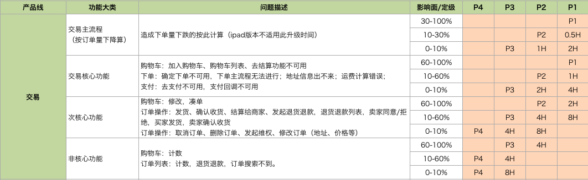
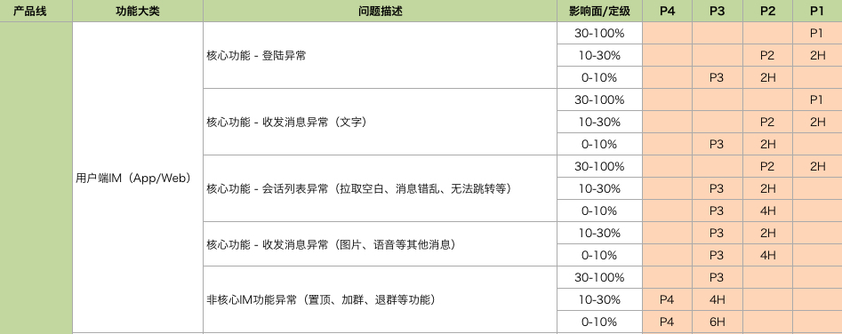

- 00 开篇词 带给你不一样的运维思考.md
- 01 为什么Netflix没有运维岗位？.md
- 02 微服务架构时代，运维体系建设为什么要以应用为核心？.md
- 03 标准化体系建设（上）：如何建立应用标准化体系和模型？.md
- 04 标准化体系建设（下）：如何建立基础架构标准化及服务化体系？.md
- 05 如何从生命周期的视角看待应用运维体系建设？.md
- 06 聊聊CMDB的前世今生.md
- 07 有了CMDB，为什么还需要应用配置管理？.md
- 08 如何在CMDB中落地应用的概念？.md
- 09 如何打造运维组织架构？.md
- 10 谷歌SRE运维模式解读.md
- 11 从谷歌CRE谈起，运维如何培养服务意识？.md
- 12 持续交付知易行难，想做成这事你要理解这几个关键点.md
- 13 持续交付的第一关键点：配置管理.md
- 14 如何做好持续交付中的多环境配置管理？.md
- 15 开发和测试争抢环境？是时候进行多环境建设了.md
- 16 线上环境建设，要扛得住真刀真枪的考验.md
- 17 人多力量大vs.两个披萨原则，聊聊持续交付中的流水线模式.md
- 18 持续交付流水线软件构建难吗？有哪些关键问题？.md
- 19 持续交付中流水线构建完成后就大功告成了吗？别忘了质量保障.md
- 20 做持续交付概念重要还是场景重要？看笨办法如何找到最佳方案.md
- 21 极端业务场景下，我们应该如何做好稳定性保障？.md
- 22 稳定性实践：容量规划之业务场景分析.md
- 23 稳定性实践：容量规划之压测系统建设.md
- 24 稳定性实践：限流降级.md
- 25 稳定性实践：开关和预案.md
- 26 稳定性实践：全链路跟踪系统，技术运营能力的体现.md
- 27 故障管理：谈谈我对故障的理解.md
- 28 故障管理：故障定级和定责.md
- 29 故障管理：鼓励做事，而不是处罚错误.md
- 30 故障管理：故障应急和故障复盘.md
- 31 唇亡齿寒，运维与安全.md
- 32 为什么蘑菇街会选择上云？是被动选择还是主动出击？.md
- 33 为什么混合云是未来云计算的主流形态？.md
- 35 以绝对优势立足：从CDN和云存储来聊聊云生态的崛起.md
- 36 量体裁衣方得最优解：聊聊页面静态化架构和二级CDN建设.md
- 37 云计算时代，我们所说的弹性伸缩，弹的到底是什么？.md
- 38 我是如何走上运维岗位的？.md
- 39 云计算和AI时代，运维应该如何做好转型？.md
- 40 运维需要懂产品和运营吗？.md
- 41 冷静下来想想，员工离职这事真能防得住吗？.md
- 42 树立个人品牌意识：从背景调查谈谈职业口碑的重要性.md
- 划重点：赵成的运维体系管理课精华（一）.md
- 划重点：赵成的运维体系管理课精华（三）.md
- 划重点：赵成的运维体系管理课精华（二）.md
- 新书 《进化：运维技术变革与实践探索》.md
- 特别放送 我的2019：收获，静静等待.md
- 结束语 学习的过程，多些耐心和脚踏实地.md
28 故障管理：故障定级和定责
故障管理的第一步是对故障的理解，只有正确地面对故障，我们才能够找到更合理的处理方式。今天就来和你分享关于故障定级和定责方面的经验。
故障的定级标准
上期文章中介绍到，如果我们的注意力仅仅盯着故障本身，就非常容易揪着责任人不放，进而形成一些负面效应，所以我们要将更多的注意力放到故障背后的技术和管理问题上。
但是，这并不是说对故障本身就可以不重视，相反，故障发生后，一定要严肃对待。这里就需要制定相应的标准和规范来指导我们的处理过程。这个过程并不是一定找出谁来承担责任，或者一定要进行处罚，而是期望通过这样的过程，让我们能够从故障中深刻地认识到我们存在的不足，并制定出后续的改进措施。
这里有一个关键角色，我们称之为技术支持，也有的团队叫 NOC（Network Operation Center）。这个角色主要有两个职责：一是跟踪线上故障处理和组织故障复盘，二是制定故障定级定责标准，同时有权对故障做出定级和定责，有点像法院法官的角色，而上面的两个标准就像是法律条款，法官依法办事，做到公平公正。
所以，这里的一个关键就是我们要有明确的故障定级标准。这个标准主要为了判定故障影响程度，且各相关利益方能够基于统一的标准判断和评估。
现实情况中，因为各方受到故障的影响不同，对故障影响的理解也不同，所以复盘过程中，经常会出现下面这两种争执场景。
- 技术支持判定故障很严重，但是责任方认为没什么大不了的，不应该把故障等级判定到如此之高；
- 技术支持认为故障影响较小，但是受影响方却认为十分严重，不应该将故障等级判定得这么低。
遇到这种情况，技术支持作为故障判定的法官，就必须拿出严格的判定标准，并说明为什么这么判定。
我们将故障等级设置为P0~P4这么5个级别，P0为最高，P4为最低。对于电商，主要以交易下跌、支付下跌、广告收入资损这些跟钱相关的指标为衡量标准。对于其他业务如用户IM等，主要区分业务类型，制定符合业务特点的定级标准。两个示例如下。
交易链路故障定级标准示例：

用户IM故障定级标准示例：

故障定级的标准，会由技术支持与各个业务研发团队进行点对点的细节沟通讨论，从业务影响角度把影响面、影响时长这些因素串联起来。这样即使在后续出现争执，也会有对应的标准参考。这个标准可能覆盖不到有些故障影响或特例，但是技术支持可以根据自己的经验进行“自由裁量”。同时，每个季度或半年对标准进行一次修订和完善。这样，我们前面提到的争执就会越来越少，再加上我们内部树立了“技术支持角色拥有绝对话语权和决策权”的制度，执行过程中就会顺畅很多。
对于P0故障，通常是由两个级以上的P1故障叠加造成的，这说明已经发生了非常严重的全站故障。
不同的故障定级，在故障应对时采取的策略也就不同。一般来说，P2及以上故障就需要所有相关责任人马上上线处理，并及时恢复业务。对于P3或P4的问题，要求会适当放宽。整个过程，技术支持会给出一个基本判断，然后会组织召集临时故障应急小组处理。
关于全年全站，或者分业务的可用性和可靠性，这个可以借鉴业界通用的MTBF（Mean Time Between Failures，平均故障间隔时间）、MTTR（Mean Time To Recovery，平均修复时间）、MTTF（Mean Time To Failure，平均失效前时间）这几个指标来衡量，这里我们就不详细介绍了。
故障的定责标准
上述的故障定级标准，主要是用来判定故障等级，使得故障相关方不至于过分纠结在等级标准上。而故障定责的主要目的是判定责任方。这就需要有明确的故障定责标准，我认为有两个主要目的。
- 避免扯皮推诿。比如我认为是你的责任，你认为是我的责任，大家争执不清，甚至出现诋毁攻击的情况。
- 正视问题，严肃对待。不是为了处罚，但是作为责任方或责任团队一定要正视问题，找出自身不足，作为改进的主要责任者，来落地或推进改进措施。
关于第一点，避免扯皮推诿，大概是很多团队都会遇到的非常头疼的问题，也是最令人生厌的问题，所以避免这样的问题，就必须得有相对清晰的定责标准。
比如我们经常会提到的运维背锅的说法，这种情况出现的场景经常是，某个核心功能出现了故障，有大量超时或失败，对应的开发定位一下，说我的代码没有问题，场景也没复现，这个应该是运维负责的主机、网络或者其他基础服务有问题吧，这个责任很轻易地就甩给了运维。类似的上游把责任推脱到下游的情况是经常出现的。
我们自己的实践，是严禁这种情况出现的。也就是作为受影响方，开发负责人有责任端到端地把问题定位清楚，只有当定位出来的问题确实是发生在运维的某个部件时，才允许将责任传递 ，否则不允许出现将自己的问题简单排除，就推断或者感觉应该是其他责任方的问题，然后终止后续排查或者指定下游责任方的情况出现。
当然，在这个过程中，如果需要配合，是可以要求各方投入支持的，因为共同的目标还是要清晰定位问题，找到解决方案。
这时候，就更加需要开放和宽松的氛围，如果大家始终朝着如何摆脱责任或甩锅的目标行事，就会出现非常负面的效应，这一点后面我们会详细分享。
关于定责，我们划分了几个维度，我简单示例如下。
1.变更执行
比如变更方没有及时通知到受影响方，或者事先没有进行充分的评估，出现问题，责任在变更方；如果通知到位，受影响方没有做好准备措施导致出现问题，责任在受影响方；变更操作的实际影响程度大大超出预期，导致受影响方准备不足出现故障，责任在变更方。
2.服务依赖
比如私自调用接口，或者调用方式不符合约定规则，责任在调用方；如果是服务方没有明确示例或说明，导致调用方出现问题，责任在服务方等等。
3.第三方责任
比如机房IDC电力故障、服务器故障、运营商网络故障等等，如果确实是不可抗力导致，责任在第三方；但是因自身的冗余或故障预案问题导致故障，责任在应用Owner。
有了这样的原则，在故障复盘时，就可以有效减少不和谐氛围的出现。因为每个公司的业务形态和特点不一样，里面的具体内容可能也不一样，上述的定责标准可能不完全适用，所以仅供示例参考。如果你在日常深受故障定责的困扰，建议尽快把规则明确起来，并能够与各方达成一致，这样就会最大程度地减少扯皮推诿的情况出现。
总结
今天我们讨论了故障管理中的定级和定责标准。蘑菇街在这方面的具体管理执行中，还是取得了不错的效果，所以分享出来，欢迎你留言与我讨论。
如果今天的内容对你有帮助，也欢迎你分享给身边的朋友，我们下期见！
© 2019 - 2023 Liangliang Lee. Powered by Vert.x and hexo-theme-book.